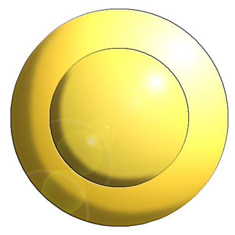

Welcome to Kanto
Description
Kanto is a lovely region with beautiful sights to see.
Visit the Pewter City museum and see ancient Pokemon Fossils.
Test your luck at the Celadon City Casino and win fabulous prizes.
Visit the Safari Zone in Fuchsia City, to catch rare and exotic Pokemon.
We're certain whereever you travel on the Island, you'll enjoy your time here.
Indigo League Badge List
- The Boulder Badge
- Location: Pewter City Gym
- Gym Leader: Brock
- The Cascade Badge
- Location: Cerulean City
- Gym Leader: Misty (my wife)
- The Thunder Badge
- Location: Vermillion City
- Gym Leader: Lt. Surge
- The Rainbow Badge
- Location: Celadon City
- Gym Leader: Erika
- The Soul Badge
- Location: Fuchsia City
- Gym Leader: Koga
- The Marsh Badge
- Location: Saffron City
- Gym Leader: Sabrina 
- The Volcano Badge
- Location: Cinnabar Island
- Gym Leader: Blaine
- The Earth Badge
- Location: Viridian City
- Gym Leader: Giovanni


Read more on Pokemon Fandome Wiki